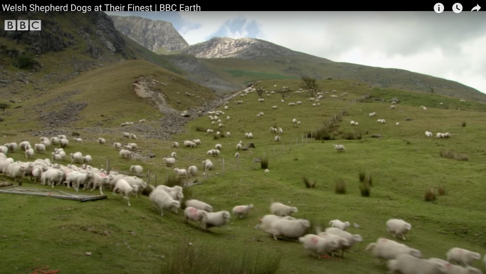

Shepherding Game
Cornell University ECE5730 Final Project
Michael Wu (yw2464) | Yuqian Cao (yc2443)
Demonstration Video
Introduction
Sound Bite
We design and build a two-player video game based on the shepherding scenario.
Brief Summary
We design a shepherding game that includes one shepherd dog, one wolf, and 200 sheep. The idea is inspired by some videos on the internet about the magical shepherd dog who can regulate the movement of a very big flock of sheep by running around them. We search for some information about the shepherding process and build the game. We try to make the reaction of sheep under the shepherd dog more natural and reasonable. To make the game more stimulating, we add a wolf feeding on sheep. The game is a competition between the shepherd dog and the wolf, the shepherd dog aims to herd more sheep into the sheep pen, and the wolf wants to eat more sheep during the process.
Fig.1 Shepherd dog and sheep flock [1]
High Level Design
Rationale and Sources of Our Project Idea
The labs with the boid algorithm as the background are very interesting, and we would like to continue building this kind of project as our final project. Yuqian happened to see the process of shepherd dog herding sheep in the vast grassland on YouTube platform, and he was very fascinated by it, one shepherd dog can actually regulate the movement of a large flock of sheep. On the one hand, Yuqian marveled at the sheepdog's intelligence and amazing shepherding mechanism, and on the other hand, he wanted to implement this process with RP2040.
Fig.2 Shepherding Process Recorded by BBC Earth [2]
We do not want to make the previous labs to be just laboratory exercises. On the contrary, we want to do our project partly based on, and advanced than lab2. In lab2, we realized the boids algorithm to model bees in flight. From the final presented results, such boids algorithm is able to simulate reasonable herd animal movements. So, in this project, the movement of the sheep flock itself can be implemented based on boids algorithm instead of simple random movement. This looks more natural. In the ECE5730 course, Prof. Adams always found papers to help realize the logic inherent in bionic scenario. Regarding shepherding, we also found some related papers[3][4][5]. However, these papers present more shepherding process-inspired ideas to solve other problems. We finally decided to implement the shepherding logic algorithmically according to our own ideas, with the goal of making the final shepherding process appear natural and reasonable, in comparison with the YouTube video.
Logical Structure
We use a top-down approach to build our project. Firstly, we finalize our idea, as described above. Secondly, the hardware, two players manipulate shepherd dog and wolf respectively need two hardware for manipulation, either joystick or button set can be applied; in addition, VGA cable is used to connect the monitor to display the position of each element and related information. Software design is also a very important part of this project, and the specific algorithm logic will be presented later.
Hardware Tradeoff
Because we were late in deciding the hardware, we did not make the first group purchase, and subsequently encountered problems such as slow delivery. We finally only got one joystick, we can only use this joystick control shepherd dog, wolf is controlled by a set of four buttons. At the same time, we made appropriate adjustments to the game balance, making the competition between the two players fairer and more reasonable.
Program and Hardware Design
Hardware Details
In our project, the RP2040's external devices include a VGA monitor, a joystick, four buttons. The hardware connection can be represented by the graph as below.
Fig.3 Hardware Connection (VGA & PC)
Fig.4 Hardware Connection (Joystick)
Fig.5 Hardware Connection (Button Set)
In applying Joystick, we refer the previous project listed on the course website, called “Boids, Predators, Joysticks, and Friends” [6]. There is no datasheet or schematic for the joystick, so we have to test them to figure out how they worked. Using a multimeter, we tested to see which pins were shorted together when a given direction is actuated. Then, we can deduce which is the common pin we will use as ground. The other four pins are the directions, so we pull them up to 3V3 with a 1k Ohm resistor to ensure they are never floating. Making use of the buttons is easier than the joystick. It is worth noting that out of the correct connection on the circuit, we have placed the buttons in convenient positions on the breadboard for operation.
Fig.6 Button Set and Joystick
When trying to use the ADC (analog-digital-converter) pins of an RP2040 to control an analog joystick, we accidentally burned the RP2040 and were forced to rebuild the circuit with a new RP2040. We initially thought that the cause was that we were connecting each GPIO ADC port in series with a 330-ohm resistor and the current of 0.01 A was high enough to burn the PICO. However, after checking RP2040’s datasheet we knew that GPIO input pins are protected by internal resistors so the issue should be something else.
Program Details
The complete code and line markers will be listed in Appendix B. In this section, I will use the line numbers directly to indicate which part of the code I am discussing. Lines 71 to 80 define the GPIO ports required by joystick and button set, corresponding to the hardware connections. Lines 82 to 100 define the global variables and give them reasonable initial values. Lines 113 to 146 define the sheep, shepherd dog and wolf, respectively, where the sheep are represented using arrays of structures, each representing seven pieces of information about a sheep, x position, y position, x speed, y speed, color, whether it is in the pen and whether it is alive. Shepherd dog and wolf also require five pieces of information each to represent, including x position, y position, x velocity, y velocity and color. The boid_initialize, dog_initialize, and wolf_initialize functions on lines 148 to 173 are reasonable initializations of them. We want the sheep have random initial position and velocity in Lines 175 to 190. For a random initial position, the "random" function is used to generate the horizontal and vertical coordinates of the initial point in a specific range. Since the specification of the velocity range is based on the synthetic velocity, the velocities in the x,y directions expressed in right-angle coordinates are difficult to use to generate the most reasonable random initial velocities. We use the polar coordinate system to generate the initial velocities (within minspeed and maxspeed) and their angles, and then convert them to velocities in the x, y directions in the right-angle coordinate system. We have a sheep pen, also called a safe zone. The inHome function between line 207 and 213 uses the x and y position to judge whether the sheep is in the pen. The function boundary_check between line 215 and 242 is used to make the sheep turn if it is near an edge. The boid_update function (245-442) is the core part of the program design. Before applying boids' algorithm, the first step is to determine the life and death (near a wolf) and herding (near a dog) status of the sheep. If the sheep is eaten by the wolf, it is marked, the value of the corresponding global variable is modified, and return. Among them, safe zone will work so that the sheep at home will not die. If there is a shepherd dog around the sheep and the sheep is not at home, the sheep is not applicable to the boid algorithm and moves away from the shepherd dog under the action of sheep_dog_factor. After this sequence of logic, the boids algorithm is applied if the sheep is not at home, and the Brownian motion algorithm is applied if the sheep is at home. Finally, do the detailed boundary check after update the position of sheep by its velocity. The dog_update function (444-481) and the wolf_update function (483-520) are quite similar, because the joystick and button set have the same mechanism inside. The functions use gpio_get to get the information from user through GPIO. The x and y direction velocities are decoupled and controlled separately. In addition, there are restrictions on the boundaries, that is, shepherd dog and wolf can only move within the specified range. The code after line 524 is basically the same as in lab2, where the text content displayed through VGA is changed, and the yield function is still used to keep the screen refresh rate at 30fps. In the process of coding, we encounter some problems. In order to save the hardware resources of the RP2040 and to maintain a certain level of precision, we make extensive use of the fix15 data type. The operations defined in line 51-59 are used to perform operations on this type of data, and when performing operations with other data, the corresponding conversions have to be performed first. We sometimes forget to convert data types when writing code, and this leads to many strange bugs. After modifying and confirming that the data type operations are correct, the bugs are fixed. In addition, we had great trouble keeping the sheep at home and they always managed to get out through the corners. There should be not any problem with our code implementation as the same logic and code applied to the outer field worked well to keep the sheep inside. To fix this, we let the sheep perform Brownian motion of minimum speed and random direction for each time interrupt. Hence, it is extremely unlikely for them to both touch the corner and having a speed with an angle of exactly 45 degrees diagonally outward and we kept them inside home (the safe area).
Results
Eventually we implement the previously designed function where the sheep can naturally respond to the shepherd dog, which can be manipulated by joystick to herd as many sheep as possible into the sheep pen. In this process, the wolf can manipulate by the button set and the sheep near the wolf will be eaten. The sheep will not come out again after entering the sheep pen, and the top right corner of the screen shows the current number of ALIVE, SAVED, and DEAD sheep in real time. The shepherd dog and the wolf can be moved simultaneously. We have made a demo of the final rendering, which can be viewed at the top of this website.
Fig.7 Screenshot from the Demo
Conclusion
We successfully used RP2040 to accomplish the desired functionality and build this two-player shepherding game. Furthermore, we also have some other ideas. Regarding intellectual property, the boids algorithm and the VGA display techniques in our project are partially based on demo code for lab2 in ECE5730 provided by Prof. Adams.
Firstly, we would like to improve the UI to incorporate options of pausing, stopping, and restarting the game. Currently, to replay the game, the user needs to power on and off RP2040. To improve this, we can add a menu at the top right corner of the VGA screen with options including pause, stop, restart the game. The options can be controlled via user serial input or buttons.
Then, we could explore VGA display more and make the icons for the font, the wolf, the dog, and the sheep visually more vivid and colorful. In addition, we would like to add a DAC along with a speaker as in lab1 and play sound effects for different situations of the game. For example, a type of beeping sound will be played when a sheep gets eaten by a wolf.
We would also like to make our simulation more realistic by including more sheep wolf and wolf dog interactions based on research papers and live videos in the wild. For example, when the wolf eats or attack a sheep, the other sheep should be scared away.
Our team

Michael Wu
yw2464@cornell.edu
Yuqian Cao
yc2443@cornell.edu
Parts List
- Raspberry Pi Pico (RP2040)
- 8-pin Joystick
- 2-pin buttons
All parts are from ECE lab and there is no datasheet for the joystick and buttons
References
[1] Herding, American Kennel Club[2] “Welsh Shepherd Dogs at Their Finest” BBC Earth on YouTube
[3] “How a shepherd guides a sheep herd?” by Richard Greenberg
[4] “Communication-Free Shepherding Navigation with Multiple Steering Agents” by Aiyi Li, etc.
[5] “Solving the shepherding problem: heuristics for herding autonomous, interacting agents” by Daniel Strömbom, etc.
[6] Boids, Predators, Joysticks, and friends, a previous ECE 5730 final project
Agreement and Appendix
The group approves this report for inclusion on the course website.
The group approves the video for inclusion on the course YouTube channel.
1.
2. /*
3. shepdog project
4. */
5.
6. /**
7. * HARDWARE CONNECTIONS
8. * - GPIO 16 ---> VGA Hsync
9. * - GPIO 17 ---> VGA Vsync
10. *
11. * - GPIO 18 ---> 330 ohm resistor ---> VGA Red
12. * - GPIO 19 ---> 330 ohm resistor ---> VGA Green
13. * - GPIO 20 ---> 330 ohm resistor ---> VGA Blue
14. * - RP2040 GND ---> VGA GND
15. *
16. * - GPIO 10 ---> 1000 OHM resistor ---> joystick w dir dog ---> 3V3
17. * - GPIO 11 ---> 1000 OHM resistor ---> joystick a dir dog ---> 3V3
18. * - GPIO 12 ---> 1000 OHM resistor ---> joystick s dir dog ---> 3V3
19. * - GPIO 13 ---> 1000 OHM resistor ---> joystick d dir dog ---> 3V3
20. * - GPIO 2 ---> 1000 OHM resistor ---> button w dir wolf ---> 3V3
21. * - GPIO 3 ---> 1000 OHM resistor ---> button a dir wolf ---> 3V3
22. * - GPIO 4 ---> 1000 OHM resistor ---> button s dir wolf ---> 3V3
23. * - GPIO 5 ---> 1000 OHM resistor ---> button d dir wolf ---> 3V3
24. */
25.
26. // Include the VGA grahics library
27. #include "vga_graphics.h"
28. // Include standard libraries
29. #include
30. #include
31. #include
32. #include
33. #include
34.
35. // Include Pico libraries
36. #include "pico/stdlib.h"
37. #include "pico/divider.h"
38. #include "pico/multicore.h"
39. // Include hardware libraries
40. #include "hardware/adc.h"
41. #include "hardware/pio.h"
42. #include "hardware/dma.h"
43. #include "hardware/clocks.h"
44. #include "hardware/pll.h"
45. #include "hardware/gpio.h"
46. // Include protothreads
47. #include "pt_cornell_rp2040_v1.h"
48.
49. // === the fixed point macros ========================================
50. typedef signed int fix15 ;
51. #define multfix15(a,b) ((fix15)((((signed long long)(a))*((signed long long)(b)))>>15))
52. #define float2fix15(a) ((fix15)((a)*32768.0)) // 2^15
53. #define fix2float15(a) ((float)(a)/32768.0)
54. #define absfix15(a) abs(a)
55. #define int2fix15(a) ((fix15)(a << 15))
56. #define fix2int15(a) ((int)(a >> 15))
57. #define char2fix15(a) (fix15)(((fix15)(a)) << 15)
58. #define divfix(a,b) (fix15)(div_s64s64( (((signed long long)(a)) << 15), ((signed long long)(b))))
59. #define sqrtfix(a) (float2fix15(sqrt(fix2float15(a))))
60.
61. // Wall detection
62. #define hitBottom(b) (b>int2fix15(350))
63. #define hitTop(b) (bint2fix15(510))
66.
67. // uS per frame
68. #define FRAME_RATE 1000000/30 //33000
69. #define PI 3.1415927
70.
71. //buttons
72. #define button_w 10
73. #define button_a 11
74. #define button_s 12
75. #define button_d 13
76.
77. #define button_w1 2
78. #define button_a1 3
79. #define button_s1 4
80. #define button_d1 5
81.
82. // global variables
83. int boid_total_num = 200;
84. int boid_alive_num = 200;
85. int boid_safe_num = 0;
86. int boid_dead_num = 0;
87.
88. //define parameters for void algorithm
89. fix15 turnfactor = float2fix15(0.2);
90. fix15 visualRange = float2fix15(40);
91. fix15 protectedRange = float2fix15(8);
92. fix15 sheepDogRange = float2fix15(35);
93. fix15 sheepwolfRange = float2fix15(5);
94. fix15 centeringfactor = float2fix15(0.0005);
95. fix15 avoidfactor = float2fix15(0.05);
96. fix15 matchingfactor = float2fix15(0.05);
97. fix15 maxspeed = float2fix15(3);
98. fix15 minspeed = float2fix15(0);
99. fix15 maxdogspeed = float2fix15(10);
100. fix15 sheep_shift_factor = float2fix15(0.05);
101.
102.
103. // min and max functions
104. fix15 max(fix15 num1, fix15 num2) {
105. return (num1 > num2 ) ? num1 : num2;
106. }
107.
108. fix15 min(fix15 num1, fix15 num2) {
109. return (num1 > num2 ) ? num2 : num1;
110. }
111.
112.
113. // boid instance
114. typedef struct list {
115. fix15 pos_x;
116. fix15 pos_y;
117. fix15 vx;
118. fix15 vy ;
119. char color;
120. bool inCage;
121. bool alive;
122. } Boid;
123.
124. Boid boid_list[1000];
125.
126. // dog instance
127. typedef struct list1 {
128. fix15 pos_x;
129. fix15 pos_y;
130. fix15 vx;
131. fix15 vy ;
132. char color;
133. } Dog;
134.
135. Dog shep;
136.
137. // wolf instance
138. typedef struct list2 {
139. fix15 pos_x;
140. fix15 pos_y;
141. fix15 vx;
142. fix15 vy ;
143. char color;
144. } Wolf;
145.
146. Wolf wolf;
147.
148. // initialization
149. void boid_initialize(Boid* b) {
150. b->pos_x = 0;
151. b->pos_y = 0;
152. b->vx = 0;
153. b->vy = 0;
154. b->color = WHITE;
155. b->inCage = false;
156. b->alive = true;
157. }
158.
159. void dog_initialize(Dog* d) {
160. d->pos_x = int2fix15(300);
161. d->pos_y = int2fix15(240);
162. d->vx = 0;
163. d->vy = 0;
164. d->color = RED;
165. }
166.
167. void wolf_initialize(Wolf* w) {
168. w->pos_x = int2fix15(330);
169. w->pos_y = int2fix15(240);
170. w->vx = 0;
171. w->vy = 0;
172. w->color = GREEN;
173. }
174.
175. // Create a boid
176. void spawnBoid(fix15* x, fix15* y, fix15* vx, fix15* vy)
177. {
178. srand((unsigned) time_us_32());
179. // Start in frame with random location
180. *x = int2fix15(rand() % (540-100) + 100);
181. *y = int2fix15(rand() % (380-100) + 100);
182.
183. // random total speed
184. float random_speed = (float)rand()/(float)(RAND_MAX) * (3-0) + 0;
185. float random_angle = (float)rand()/(float)(RAND_MAX) * (2*PI);
186.
187. *vx = float2fix15(random_speed * (float) cos ((double) random_angle));
188. *vy = float2fix15(random_speed * (float) sin ((double) random_angle));
189.
190. }
191.
192. // Draw the boundaries
193. void drawArena() {
194. drawVLine(100, 100, 280, WHITE) ;
195. drawVLine(540, 100, 280, WHITE) ;
196. drawHLine(100, 100, 440, WHITE) ;
197. drawHLine(100, 380, 440, WHITE) ;
198.
199. drawHLine(300, 380, 40, BLACK) ;
200. drawVLine(300, 380, 10, WHITE) ;
201. drawVLine(340, 380, 10, WHITE) ;
202.
203. drawRect(270, 390, 100,50, WHITE);
204. drawHLine(300, 390, 40, BLACK) ;
205. }
206.
207. bool inHome(fix15 x, fix15 y) {
208. if(x >= int2fix15(270) && x <= int2fix15(370) && y >= int2fix15(390) && y <= int2fix15(440)) {
209. return true;
210. } else {
211. return false;
212. }
213. }
214.
215. // check boundaries
216. void boundary_check(int boid_num) {
217. fix15* x = &boid_list[boid_num].pos_x;
218. fix15* y = &boid_list[boid_num].pos_y;
219. fix15* vx = &boid_list[boid_num].vx;
220. fix15* vy = &boid_list[boid_num].vy;
221. bool* inRect = &boid_list[boid_num].inCage;
222. // If the boid is near an edge, make it turn by turnfactorWW
223. if (hitTop(*y)) {
224. *vy = *vy + turnfactor ;
225. }
226. // if (hitBottom(*y)) {
227. // *vy = *vy - turnfactor ;
228. // }
229. if (hitRight(*x)) {
230. *vx = *vx - turnfactor;
231. }
232. if (hitLeft(*x)) {
233. *vx = *vx + turnfactor;
234. }
235. if (inHome(*x, *y)) {
236. if(*inRect == false) {
237. *inRect = true;
238. boid_safe_num++;
239. }
240.
241. }
242. }
243.
244. // Detect wallstrikes, update velocity and position
245. void boid_update(int cur)
246. {
247.
248. fix15* x = &boid_list[cur].pos_x;
249. fix15* y = &boid_list[cur].pos_y;
250. fix15* vx = &boid_list[cur].vx;
251. fix15* vy = &boid_list[cur].vy;
252. bool* atHome = &boid_list[cur].inCage;
253. bool* isalive = &boid_list[cur].alive;
254.
255. fix15* x_wolf = &wolf.pos_x;
256. fix15* y_wolf = &wolf.pos_y;
257. fix15* vx_wolf = &wolf.vx;
258. fix15* vy_wolf = &wolf.vy;
259. fix15 close_dx_sw = 0;
260. fix15 close_dy_sw = 0;
261.
262. // is this sheep is near a wolf?
263. fix15 sheep_wolf_dx = *x - *x_wolf;
264. fix15 sheep_wolf_dy = *y - *y_wolf;
265. fix15 squared_distance_sw = multfix15(sheep_wolf_dx,sheep_wolf_dx) + multfix15(sheep_wolf_dy,sheep_wolf_dy);
266. if (squared_distance_sw < multfix15(sheepwolfRange,sheepwolfRange) && sheep_wolf_dx < sheepwolfRange && sheep_wolf_dy < sheepwolfRange && sheep_wolf_dx > multfix15(int2fix15(-1),sheepwolfRange) && sheep_wolf_dy > multfix15(int2fix15(-1),sheepwolfRange)) {
267. // not in the safe area -> mark sheep as dead
268. if(!(*atHome)){
269. *isalive = false;
270. drawRect(fix2int15(boid_list[cur].pos_x), fix2int15(boid_list[cur].pos_y), 2, 2, BLACK);
271. boid_alive_num--;
272. boid_dead_num++;
273. return;
274. }
275. }
276. if(!(*isalive)) {
277. return;
278. }
279.
280. fix15* x_dog = &shep.pos_x;
281. fix15* y_dog = &shep.pos_y;
282. fix15* vx_dog = &shep.vx;
283. fix15* vy_dog = &shep.vy;
284. fix15 close_dx_sd = 0;
285. fix15 close_dy_sd = 0;
286.
287. // is the sheep near a dog?
288. fix15 sheep_dog_dx = *x - *x_dog;
289. fix15 sheep_dog_dy = *y - *y_dog;
290. fix15 squared_distance_sd = multfix15(sheep_dog_dx,sheep_dog_dx) + multfix15(sheep_dog_dy,sheep_dog_dy);
291. // if not at home, the sheep rans away from the dog
292. if(!(*atHome)) {
293. if (squared_distance_sd < multfix15(sheepDogRange,sheepDogRange)&& sheep_dog_dx < sheepDogRange && sheep_dog_dy < sheepDogRange && sheep_dog_dx > multfix15(int2fix15(-1),sheepDogRange) && sheep_dog_dy > multfix15(int2fix15(-1),sheepDogRange)) {
294. close_dx_sd += sheep_dog_dx;
295. close_dy_sd += sheep_dog_dy;
296. *vx = *vx + multfix15(close_dx_sd,sheep_shift_factor);
297. *vy = *vy + multfix15(close_dy_sd,sheep_shift_factor);
298.
299. } else {
300. // boid algorithm
301. fix15 xpos_avg = 0, ypos_avg = 0, xvel_avg = 0, yvel_avg = 0, close_dx = 0, close_dy = 0;
302. fix15 neighboring_boids = 0;
303. for (int i = 0; i < boid_total_num; i++) {
304. if(i != cur && boid_list[i].alive && !boid_list[i].inCage) {
305. fix15* x_o = &boid_list[i].pos_x;
306. fix15* y_o = &boid_list[i].pos_y;
307. fix15* vx_o = &boid_list[i].vx;
308. fix15* vy_o = &boid_list[i].vy;
309. bool* atHome_o = &boid_list[i].inCage;
310. bool* isalive_o = &boid_list[i].alive;
311.
312. // Compute differences in x and y coordinates
313. fix15 dx = *x - *x_o;
314. fix15 dy = *y - *y_o;
315. // Are both those differences less than the visual range?
316. if (dx < visualRange && dy < visualRange && dx > -visualRange && dy > -visualRange) {
317. // If so, calculate the squared distance
318. fix15 squared_distance = multfix15(dx,dx) + multfix15(dy,dy);
319.
320. // Is squared distance less than the protected range?
321. if (squared_distance < multfix15(protectedRange,protectedRange)) {
322.
323. // If so, calculate difference in x/y-coordinates to nearfield boid
324. close_dx += dx;
325. close_dy += dy;
326. }
327.
328. // If not in protected range, is the boid in the visual range?
329. else if (squared_distance < multfix15(visualRange,visualRange)) {
330.
331. // Add other boid's x/y-coord and x/y vel to accumulator variables
332. xpos_avg += *x_o;
333. ypos_avg += *y_o;
334. xvel_avg += *vx_o;
335. yvel_avg += *vy_o;
336.
337. // Increment number of boids within visual range
338. neighboring_boids += int2fix15(1);
339. }
340. }
341. }
342. }
343.
344. // If there were any boids in the visual range . . .
345. if (neighboring_boids > 0) {
346.
347. // Divide accumulator variables by number of boids in visual range
348. xpos_avg = divfix(xpos_avg,neighboring_boids);
349. ypos_avg = divfix(ypos_avg,neighboring_boids);
350. xvel_avg = divfix(xvel_avg,neighboring_boids);
351. yvel_avg = divfix(yvel_avg,neighboring_boids);
352.
353. // Add the centering/matching contributions to velocity
354. *vx = *vx + multfix15((xpos_avg - *x),centeringfactor) + multfix15((xvel_avg - *vx), matchingfactor);
355.
356. *vy = *vy + multfix15((ypos_avg - *y),centeringfactor) + multfix15((yvel_avg - *vy), matchingfactor);
357. }
358.
359. // Add the avoidance contribution to velocity
360. *vx = *vx + multfix15(close_dx,avoidfactor);
361. *vy = *vy + multfix15(close_dy,avoidfactor);
362. }
363. } else {
364. // sheep in the same zone do Brownian motion
365. float home_speed = 1;
366. float random_angle = (float)rand()/(float)(RAND_MAX) * (2*PI);
367. *vx = float2fix15(home_speed * (float) cos ((double) random_angle));
368. *vy = float2fix15(home_speed * (float) sin ((double) random_angle));
369. }
370.
371. boundary_check(cur);
372.
373. // // Calculate the boid's speed
374. // // Slow step! Lookup the "alpha max plus beta min" algorithm
375. fix15 temp_add = multfix15(*vx,*vx) + multfix15(*vy,*vy);
376. fix15 speed = sqrtfix( temp_add );
377.
378. // Enforce min and max speeds
379. if (speed < minspeed && !(*atHome)) {
380. *vx = multfix15(divfix(*vx,speed),minspeed);
381. *vy = multfix15(divfix(*vy,speed),minspeed);
382. }
383.
384. if (speed > maxspeed) {
385. *vx = multfix15(divfix(*vx,speed),maxspeed);
386. *vy = multfix15(divfix(*vy,speed),maxspeed);
387. }
388.
389.
390.
391. // Update position using velocity
392. *x = *x + *vx ;
393. *y = *y + *vy ;
394.
395. // does not allow sheep move out of home
396. if(*atHome) {
397. if(*y <= int2fix15(390)) {
398. *y = int2fix15(395);
399. *vy = 1;
400. }
401. else if(*y >= int2fix15(440)) {
402. *y = int2fix15(435);
403. *vy = -1;
404. }
405. else if(*x <= int2fix15(270)) {
406. *x = int2fix15(275);
407. *vx = 1;
408. }
409. else if(*y >= int2fix15(390) && *y <= int2fix15(440) && *x >= int2fix15(370)) {
410. *x = int2fix15(365);
411. *vx = -1;
412. }
413. }
414. // enforce strict border limits for sheep not at home as well
415. else{
416. if(*x >= int2fix15(540)) {
417. *x = int2fix15(535);
418. *vx = -1;
419. }
420. if(*x <= int2fix15(100)) {
421. *x = int2fix15(105);
422. *vx = 1;
423. }
424. if(*x >= int2fix15(100) && *x <= int2fix15(300) && *y >= int2fix15(380) && *y <= int2fix15(390)) {
425. *y = int2fix15(380);
426. *vy = -1;
427. }
428. if(*x >= int2fix15(340) && *x <= int2fix15(540) && *y >= int2fix15(380) && *y <= int2fix15(390)) {
429. *y = int2fix15(380);
430. *vy = -1;
431. }
432. if(*y <= int2fix15(100)) {
433. *y = int2fix15(105);
434. *vy = 1;
435. }
436. if(*y >= int2fix15(440)) {
437. *y = int2fix15(435);
438. *vy = -1;
439. }
440. }
441.
442. }
443.
444. void dog_update() {
445. fix15* x = &shep.pos_x;
446. fix15* y = &shep.pos_y;
447. fix15* vx = &shep.vx;
448. fix15* vy = &shep.vy;
449.
450. if(gpio_get(button_w) == 1 && gpio_get(button_s) == 0) {
451. *vy = int2fix15(-5);
452. }
453. else if(gpio_get(button_w) == 0 && gpio_get(button_s) == 1) {
454. *vy = int2fix15(5);
455. }
456. else *vy = int2fix15(0);
457.
458. if(gpio_get(button_a) == 1 && gpio_get(button_d) == 0) {
459. *vx = int2fix15(-5);
460. }
461. else if(gpio_get(button_a) == 0 && gpio_get(button_d) == 1) {
462. *vx = int2fix15(5);
463. }
464. else *vx = int2fix15(0);
465.
466. *x = *x + *vx ;
467. *y = *y + *vy ;
468.
469. if(*x >= int2fix15(540)) {
470. *x = int2fix15(535);
471. }
472. if(*x <= int2fix15(100)) {
473. *x = int2fix15(105);
474. }
475. if(*y <= int2fix15(100)) {
476. *y = int2fix15(105);
477. }
478. if(*y >= int2fix15(380)) {
479. *y = int2fix15(375);
480. }
481. }
482.
483. void wolf_update() {
484. fix15* x = &wolf.pos_x;
485. fix15* y = &wolf.pos_y;
486. fix15* vx = &wolf.vx;
487. fix15* vy = &wolf.vy;
488.
489. if(gpio_get(button_w1) == 1 && gpio_get(button_s1) == 0) {
490. *vy = int2fix15(-5);
491. }
492. else if(gpio_get(button_w1) == 0 && gpio_get(button_s1) == 1) {
493. *vy = int2fix15(5);
494. }
495. else *vy = int2fix15(0);
496.
497. if(gpio_get(button_a1) == 1 && gpio_get(button_d1) == 0) {
498. *vx = int2fix15(-5);
499. }
500. else if(gpio_get(button_a1) == 0 && gpio_get(button_d1) == 1) {
501. *vx = int2fix15(5);
502. }
503. else *vx = int2fix15(0);
504.
505. *x = *x + *vx ;
506. *y = *y + *vy ;
507.
508. if(*x >= int2fix15(540)) {
509. *x = int2fix15(535);
510. }
511. if(*x <= int2fix15(100)) {
512. *x = int2fix15(105);
513. }
514. if(*y <= int2fix15(100)) {
515. *y = int2fix15(105);
516. }
517. if(*y >= int2fix15(380)) {
518. *y = int2fix15(375);
519. }
520. }
521. // =======================================================
522. // === users serial input thread, not used in this project
523. // =======================================================
524. static PT_THREAD (protothread_serial(struct pt *pt))
525. {
526. PT_BEGIN(pt);
527. PT_END(pt);
528. }
529.
530. // Animation on core 0
531. static PT_THREAD (protothread_anim(struct pt *pt))
532. {
533. // Mark beginning of thread
534. PT_BEGIN(pt);
535.
536. // Variables for maintaining frame rate
537. static int begin_time ;
538. static int spare_time ;
539. dog_initialize(&shep);
540. wolf_initialize(&wolf);
541. for(int i = 0; i < boid_total_num; i++) {
542. boid_initialize(&boid_list[i]);
543. spawnBoid(&boid_list[i].pos_x, &boid_list[i].pos_y, &boid_list[i].vx, &boid_list[i].vy);
544. }
545.
546. while(1) {
547. // Measure time at start of thread
548. begin_time = time_us_32() ;
549. drawRect(fix2int15(shep.pos_x) - 2, fix2int15(shep.pos_y) - 2, 5, 5, BLACK);
550. drawRect(fix2int15(wolf.pos_x) - 2, fix2int15(wolf.pos_y) - 2, 5, 5, BLACK);
551. for(int i = 0; i < boid_total_num; i++) {
552. // Do not draw dead sheep
553. if(boid_list[i].alive == false) {
554. continue;
555. }
556. // erase previous sheep drawing
557. drawRect(fix2int15(boid_list[i].pos_x), fix2int15(boid_list[i].pos_y), 2, 2, BLACK);
558. // update sheep's position and velocity
559. boid_update(i) ;
560. // draw sheep's new positions if alive
561. if(boid_list[i].alive) {
562. drawRect(fix2int15(boid_list[i].pos_x), fix2int15(boid_list[i].pos_y), 2, 2, boid_list[i].color);
563. }
564.
565. }
566. // update dog and wolf
567. dog_update();
568. drawRect(fix2int15(shep.pos_x) - 2, fix2int15(shep.pos_y) - 2, 5, 5, RED);
569. wolf_update();
570. drawRect(fix2int15(wolf.pos_x) - 2, fix2int15(wolf.pos_y) - 2, 5, 5, GREEN);
571. // draw the boundaries
572. drawArena() ;
573. // delay in accordance with frame rate
574. spare_time = FRAME_RATE - (time_us_32() - begin_time) ;
575.
576. // VGA caption display
577. setTextColor(WHITE);
578. setCursor(32,0);
579. setTextSize(1);
580. writeString("ECE 5730 Students:");
581. setCursor(32,10);
582. writeString("Michael Wu (yw2464)");
583. setCursor(32,20);
584. writeString("Yuqian Cao (yc2443)");
585.
586. setCursor(500,0);
587. writeString("sheep alive: ");
588. setCursor(500,10);
589. writeString("sheep saved: ");
590. setCursor(500,20);
591. writeString("sheep dead: ");
592. setCursor(500,30);
593. writeString("spare time (us): ");
594. setCursor(500,40);
595. writeString("time elapsed (s):");
596.
597. fillRect(600,0,50,50,BLACK);
598. static char numtext[40];
599. static char livetext[40];
600. static char deadtext[40];
601. static char stmtext[40];
602. static char teltext[40];
603. sprintf(numtext,"%d",(int)boid_alive_num);
604. setCursor(600,0);
605. writeString(numtext);
606. sprintf(livetext,"%d",(int)boid_safe_num);
607. setCursor(600,10);
608. writeString(livetext);
609. sprintf(deadtext,"%d",(int)boid_dead_num);
610. setCursor(600,20);
611. writeString(deadtext);
612. sprintf(stmtext,"%d",(int)spare_time);
613. setCursor(600,30);
614. writeString(stmtext);
615. sprintf(teltext,"%d",(int)(time_us_32()/1000000));
616. setCursor(600,40);
617. writeString(teltext);
618.
619. // yield for necessary amount of time
620. PT_YIELD_usec(spare_time) ;
621. // NEVER exit while
622. } // END WHILE(1)
623. PT_END(pt);
624. } // animation thread
625.
626.
627. // Animation on core 1, not used
628. static PT_THREAD (protothread_anim1(struct pt *pt))
629. {
630. // Mark beginning of thread
631. PT_BEGIN(pt);
632.
633.
634. PT_END(pt);
635. } // animation thread
636.
637. // ========================================
638. // === core 1 main -- started in main below
639. // ========================================
640. void core1_main(){
641. // Add animation thread
642. pt_add_thread(protothread_anim1);
643. // Start the scheduler
644. pt_schedule_start ;
645.
646. }
647.
648. // ========================================
649. // === main
650. // ========================================
651. // USE ONLY C-sdk library
652. int main(){
653. // initialize stio
654. stdio_init_all() ;
655. gpio_init(button_w);
656. gpio_set_dir(button_w, GPIO_IN);
657. gpio_init(button_a);
658. gpio_set_dir(button_a, GPIO_IN);
659. gpio_init(button_s);
660. gpio_set_dir(button_s, GPIO_IN);
661. gpio_init(button_d);
662. gpio_set_dir(button_d, GPIO_IN);
663.
664.
665. gpio_init(button_w1);
666. gpio_set_dir(button_w1, GPIO_IN);
667. gpio_init(button_a1);
668. gpio_set_dir(button_a1, GPIO_IN);
669. gpio_init(button_s1);
670. gpio_set_dir(button_s1, GPIO_IN);
671. gpio_init(button_d1);
672. gpio_set_dir(button_d1, GPIO_IN);
673.
674.
675. adc_init();
676. adc_gpio_init(26);
677. adc_select_input(0);
678. uint16_t result = adc_read();
679. float voltage = result * (3.3/4095.0);
680. printf(" ADC Raw Value = %d Voltage = %f \r\n", result, voltage);
681.
682. // initialize VGA
683. initVGA() ;
684.
685. // start core 1
686. multicore_reset_core1();
687. multicore_launch_core1(&core1_main);
688.
689. // add threads
690. pt_add_thread(protothread_serial);
691. pt_add_thread(protothread_anim);
692.
693. // start scheduler
694. pt_schedule_start ;
695. }